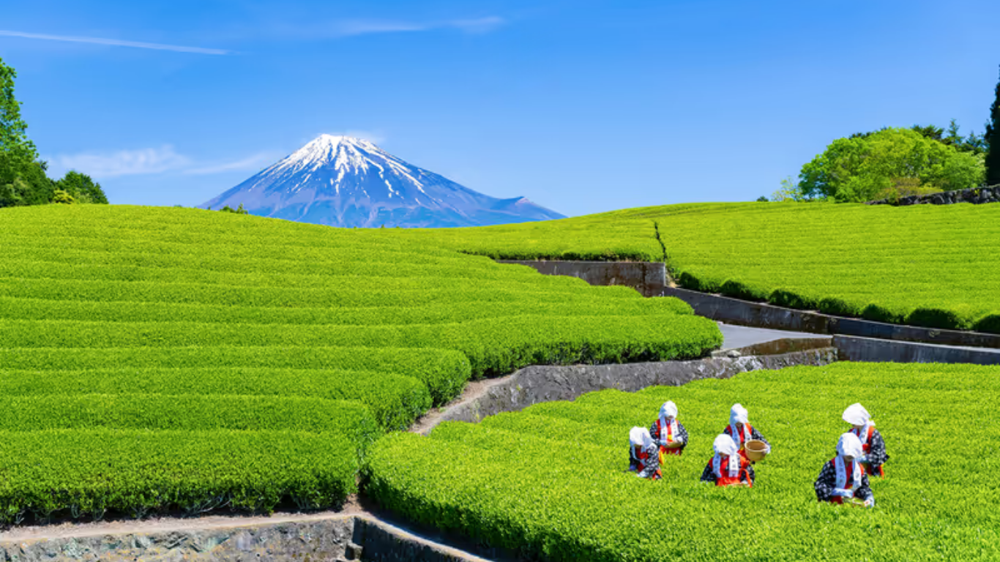
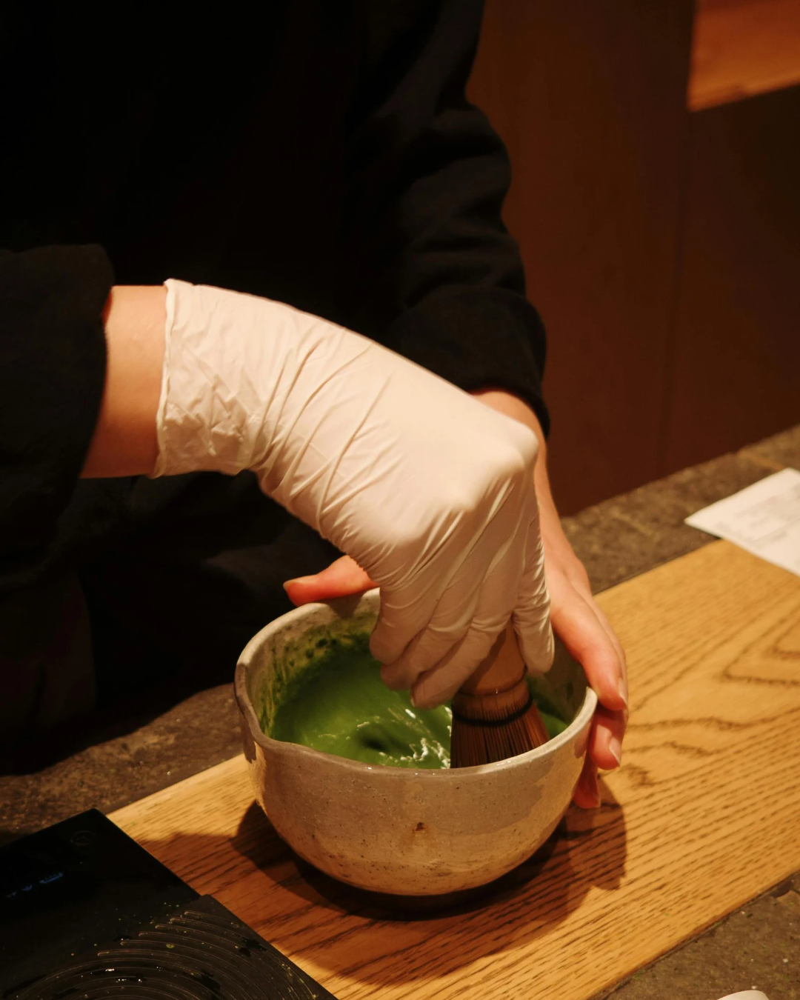

JAPANESE TRADITION
About Matcha
Discover the tea, preparation, and traditions that inspire every drink at The Matcha Lab.
What Is Matcha?
Matcha is a finely ground Japanese green tea. Unlike steeped tea, matcha is whisked directly into water, allowing the tea itself to become part of the drink.
Matcha is known for its vibrant green color, distinctive flavor, and important place in Japanese tea culture.
What Is Hojicha?
Hojicha is a Japanese roasted green tea known for its warm brown color and smooth, toasty flavor.
Unlike matcha's fresh and grassy character, hojicha develops its distinctive aroma and mellow flavor through roasting. At The Matcha Lab, we serve it as a creamy hojicha latte.

INSPIRED BY JAPAN
From Japan to Your Cup
The Matcha Lab is inspired by Japanese matcha culture and the care that goes into preparing each cup.
We want to introduce more people to matcha while respecting the traditions and quality that make Japanese matcha special.
CRAFTED WITH CARE
How We Prepare Matcha
Every Matcha Lab drink begins with carefully prepared matcha. We use a simple process to create a smooth base before combining it with the ingredients for each drink.
- The matcha is measured and sifted.
- Water is added to the matcha.
- The matcha is whisked until smooth.
- The prepared matcha is combined with the ingredients for each drink.
- Each drink is served fresh at our pop-up.

BEHIND THE CUP
See How We Prepare Matcha
Watch a behind-the-scenes look at how we prepare a handcrafted matcha drink at The Matcha Lab.